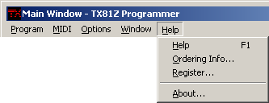

Here is where you set the MIDI ports your TX81Z is connected to. The master
controller port can also be set to the port your MIDI keyboard is connected to.
This will cause all MIDI messages (except sysex) to be forwarded as-is from
that port to the TX81Z if you need it (i.e. if it isn't already being routed by
your MIDI setup).
The names of the ports depend on what type of MIDI devices you have in your
system. For example, I have a MOTU Midi Express XT, which is a 16-port MIDI
device (8 in/8 out), and my TX81Z is hooked up on the two 2 ports. This device
is called MXPXT in the system for some reason. Hardware manufacturers have a
unique knack for inventing cryptic names, so you might have to experiment a bit
to get it working.
The channels are used to distinguish different TX81Z's in your MIDI chain if
you are linking them together in series. Nowadays they use device numbers, but
in the early days of MIDI, they thought using channels would be sufficient, so
we're stuck with using channels on early devices like the TX81Z.
The channel settings in the MIDI Setup dialog have to match the channels
that are set on the unit. They can be found in PLAY SINGLE (press the
PLAY/PERFORM button on the unit until you see PLAY SINGLE in the
display)-> UTILITY MODE (press the UTILITY button) -> Midi
Control? (press the INC button) and now you should see Basic Rcv. Ch=
<some channel> in the display. This channel and the MIDI
Out/Transmit channel in the MIDI Setup dialog need to be the same.
Now click the right arrow under PARAMETER to set the transmit channel, which
should match the MIDI In/Receive channel in the dialog.
Most of these items can be checked or unchecked. The boldface items are just
used to break up the menu a little bit and don't have any functionality.
This will disable the opening of the editor when you double click on a library
item or an item in a bank (items I01..I32, PF01..PF24, A01..A32, etc.). This
is useful if you want to audition library patches without editing them.
This is just a little thing I threw in to try and make managing the windows
a little easier. If you close an editor, like the voice editor, when this is
checked, the main window will be brought to the front and become the active
window.
This option will cause the program to save snapshots automatically without
prompting you. This happens in three situations:
This is handy because it cuts down the number of windows that pop up, but it
can also work against you by saving things you don't want to save without
telling you. You can avoid this by always using a scratch snapshot file
as the current snapshot file and using the
Save Copy As...
and Load Copy items to work with other snapshot files.
Or, you can keep all your important stuff in libraries, which is probably the
best idea.
This will prevent duplicate items from being copied into a library, even if
they have the same name.
This allows you to set the highlight color used for modified files and items,
and a few other places, like the color of the EG graphs and the highlight color
of the keys on the keyboard controls.
These options affect the operation of the program so that it will reflect the
features of the TX81Z that you are using. This version number refers to the
version of the firmware of your TX81Z. For instructions on finding the
version number see the TX81Z Notes
section. This version number will be automatically detected by the program
whenever possible, so you shouldn't have to manually change the version number
very often. The differences between versions are listed in the
TX81Z Notes section.
This menu is used to display the various editor windows, the on-screen MIDI
keyboard, and the TX81Z remote control. Each of these are covered in their
respective sections in the manual:

Brings up the help file and opens it to the Main Window section.
Tells you how to register the program and lets you enter your registration
code.
Displays the TX81Z Programmer splash screen, which shows the program version,
my name, etc.
MIDI Menu

Setup...
Brings up the MIDI Setup dialog so you can configure your MIDI
connections to the TX81Z.

Options Menu

Startup Options:
Load Previously Open Files At Startup
When this option is set, the program will open the previously opened snapshot
and library files when it starts up next time.
Retrieve Edit Buffers At Startup
When this option is set, the program will retrieve the voice edit buffer (VCED)
and the performance edit buffer (PCED) from the unit when it starts up.
Main Window Options:
Show Full Path Names
This option just makes file names appear with fully qualified path names. A
file name is normally displayed without the path, unless it's a file in one
of the recent documents' lists that is in a different directory from the
current file, then it will display the full path.
Do Not Open Editor When Double-Clicking Bank Items
Bring Main Window To The Front After Closing An Editor
Snapshot Options:
Automatically Save Snapshots
Library Options:
Disallow Duplicates In Libraries
Global Options:
Unslashed Zeros
I don't have a big monitor and sometimes it's just too much effort for me to
tell the difference between the zeros and the eights, so I added this to make
it easier. Of course, the O's and the zeros look identical with this option
on, so it's a tradeoff either way.
Set Highlight Color...
TX81Z Version:
Version 1.0
Other Version (1.1 - 1.6)Window Menu

Help Menu
Help
Ordering Info...
This will open up the help file to the ordering page. If the help file is
not in the same directory as the executable, then the program will open up
your browser to the PayPal page on the internet. I've heard people complain
about not being able to figure out how to register shareware, so I thought I
would throw that in as a backup.
Register...
About...